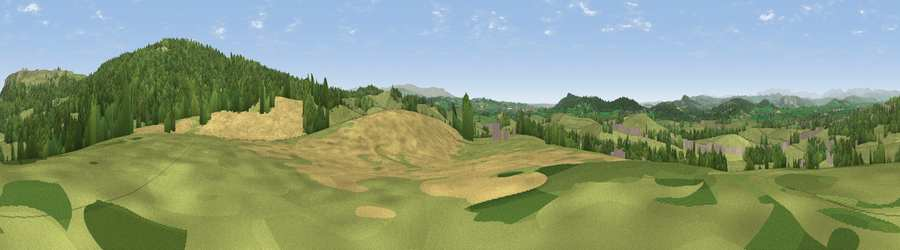

Viewpoint near Burton-in-Kendal
#14592 in England · top 50% of its area beats it · near Burton-in-KendalThe view, rendered

A 360° render of this exact spot computed from the terrain model, tree cover and land cover — summer colours, afternoon light, calibrated against photographs of famous viewpoints. Real trees, hedges and buildings will differ in detail.
The panorama
Grey silhouette: terrain skyline in each direction (720 bearings, Earth curvature and refraction included). Dashed green: skyline with trees (+15 m) and buildings (+8 m) as obstacles. Blue strip: how far the ground is visible on each bearing.
Where the view opens
Wedge length = distance to the farthest visible ground on that bearing (vegetation-aware). Rings at 10, 25 and 50 km.
What fills the view
55% grassland · 31% woodland · 10% cropland · 3% built-up
Angular shares of the visible panorama (visual magnitude), not map area. Landscape diversity 0.45 (0–1 Shannon).
Key numbers
More beautiful places nearby
The staircase of upgrades: each row has a higher view potential than everything closer. Driving times are estimates from straight-line distance, calibrated against real road routing — check an actual route before setting out.
| Place | Direction | Drive | Score |
|---|---|---|---|
| Viewpoint near Dalton | SSE · 2 km | ~5 min | 63.6 |
| Viewpoint near Dalton | ESE · 2 km | ~5 min | 68.5 |
| Viewpoint near Dalton | ENE · 2 km | ~5 min | 73.0 |
| Viewpoint near Lupton | NNE · 3 km | ~8 min | 74.7 |
| Farleton Fell [Holmepark Fell] | N · 3 km | ~8 min | 77.7 |
| Viewpoint near Lupton | N · 4 km | ~8 min | 78.7 |
| Warton Crag | SW · 6 km | ~13 min | 83.2 |
| Viewpoint near Grange-over-Sands | W · 14 km | ~26 min | 83.4 |
54.18509, -2.71212 · source: screening · position refined by local search. Computed location — check access rights before visiting.